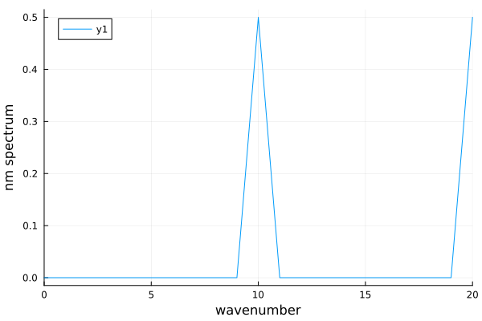
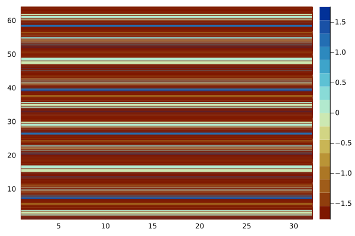
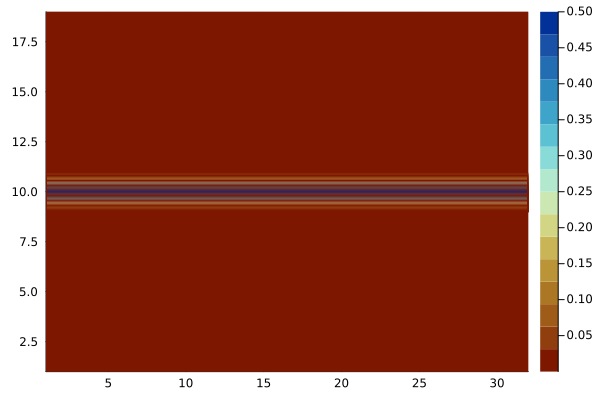
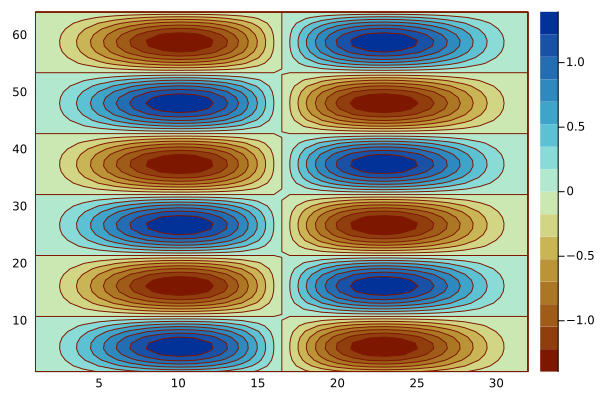
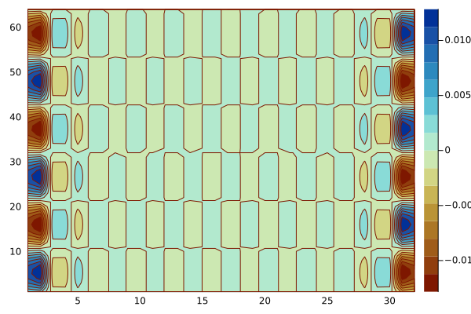
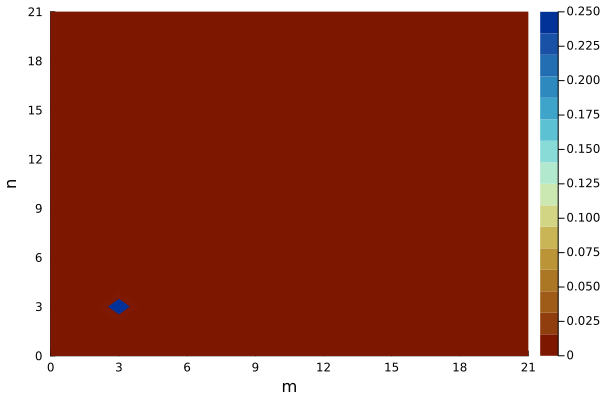

ClimaCoreSpectra.jl
ClimaCoreSpectra.jl provides functionality for calculating kinetic energy spectra using spherical harmonics.
Interface
ClimaCoreSpectra.SpectralSphericalMesh — TypeSpectralSphericalMeshSpherical mesh data structure for calculating spectra. The mesh represents a regular lat-long grid.
ClimaCoreSpectra.power_spectrum_1d — Functionpower_spectrum_1d(FT, var_grid, z, lat, lon, weight)For a variable var_grid on a (lon,lat,z) grid, given an array of weights, compute the zonal (1D) power spectrum using a Fourier transform at each Gaussian latitude. The input field must be first intepolated to a Gaussian grid.
Arguments
- FT: FloatType
- var_grid: variable on a Gaussian (lon, lat, z) grid to be transformed
- z: Array with uniform z levels
- lat: Array with uniform lats
- lon: Array with uniform longs
- weight: Array with weights for mass-weighted calculations
ClimaCoreSpectra.power_spectrum_2d — Functionpower_spectrum_2d(FT, var_grid, mass_weight)Transform a variable defined on a regular lat long grid to the 2d spectral space using fft on latitude circles (as for the 1D spectrum) and Legendre polynomials for meridians, and calculate spectra.
Arguments
- FT: FloatType
- var_grid: variable on a Gaussian (lon, lat, z) grid to be transformed
- mass_weight: Array with weights for mass-weighted calculations.
References
- [20]
ClimaCoreSpectra.compute_gaussian! — Functioncompute_gaussian!(FT, n)Compute sin(latitude) and the weight factors for Gaussian integration.
Arguments
- FT: FloatType
- n: Int, number of Gaussian latitudes
References
- Ehrendorfer, M., Spectral Numerical Weather Prediction Models, Appendix B, Society for Industrial and Applied Mathematics, 2011
Details (following notation from Ehrendorfer, 2011):
Pn(x) is an odd function
solve half of the n roots and weightes of Pn(x) # n = 2n_half
P_{-1}(x) = 0
P_0(x) = 1
P_1(x) = x
nP_n(x) = (2n-1)xP_{n-1}(x) - (n-1)P_{n-2}(x)
P'_n(x) = n/(x^2-1)(xP_{n}(x) - P_{n-1}(x))
x -= P_n(x)/P'_{n}()
Initial guess xi^{0} = cos(π(i-0.25)/(n+0.5))
wi = 2/(1-xi^2)/P_n'(xi)^2ClimaCoreSpectra.compute_legendre! — Functioncompute_legendre!(FT, num_fourier, num_spherical, sinθ, nθ)Normalized associated Legendre polynomials, P_{m,l} = qnm.
Arguments:
- FT: FloatType
- num_fourier: Int, number of truncated zonal wavenumbers (m)
- num_spherical: Int, number of total wavenumbers (n)
- sinθ: Array{FT} with sin(latitude)
- nθ: Int, number of Gaussian latitudes
References:
- Ehrendorfer, M. (2011) Spectral Numerical Weather Prediction Models, Appendix B, Society for Industrial and Applied Mathematics
- Winch, D. (2007) Spherical harmonics, in Encyclopedia of Geomagnetism and Paleomagnetism, Eds Gubbins D. and Herrero-Bervera, E., Springer
Details (using notation and Eq. references from Ehrendorfer, 2011):
l=0,1...∞ and m = -l, -l+1, ... l-1, l
P_{0,0} = 1, such that 1/4π ∫∫YYdS = δ (where Y = spherical harmonics, S = domain surface area)
P_{m,m} = sqrt((2m+1)/2m) cosθ P_{m-1,m-1}
P_{m+1,m} = sqrt(2m+3) sinθ P_{m,m}
sqrt((l^2-m^2)/(4l^2-1))P_{l,m} = P_{l-1, m} - sqrt(((l-1)^2-m^2)/(4(l-1)^2 - 1))P_{l-2,m}
THe normalization assures that 1/2 ∫_{-1}^1 P_{l,m}(sinθ) P_{n,m}(sinθ) dsinθ = δ_{n,l}
Julia index starts with 1, so qnm[m+1,l+1] = P_l^mClimaCoreSpectra.trans_grid_to_spherical! — Functiontrans_grid_to_spherical!(mesh::SpectralSphericalMesh, pfield::Arr{FT,2})Transforms a variable on a Gaussian grid (pfield[nλ, nθ]) into the spherical harmonics domain (varspherical2d[numfourier+1, num_spherical+1]).
Details:
Here λ = longitude, θ = latitude, η = sinθ, m = zonal wavenumber, n = total wavenumber:
var_spherical2d = F_{m,n} # Output variable in spectral space (Complex{FT}[num_fourier+1, num_spherical+1])
qwg = P_{m,n}(η)w(η) # Weighted Legendre polynomials (FT[num_fourier+1, num_spherical+1, nθ])
var_fourier2d = g_{m, θ} # Untruncated Fourier transformation (Complex{FT} [nλ, nθ])
pfield = F(λ, η) # Input variable on Gaussian grid FT[nλ, nθ]Arguments
- mesh: struct with mesh information
- pfield: variable on Gaussian grid to be transformed
References
- Ehrendorfer, M., Spectral Numerical Weather Prediction Models, Appendix B, Society for Industrial and Applied Mathematics, 2011
- [21]
ClimaCoreSpectra.compute_wave_numbers! — Functioncompute_wave_numbers!(wave_numbers, num_fourier::Int, num_spherical::Int)Store the total wave number n for this basis in a matrix wave_numbers of shape [m,n].
Arguments:
- wavenumbers: Matrix of [Int, Int] to store the wave wavenumbers
- num_fourier: Int, number of truncated zonal wavenumbers (m)
- num_spherical: Int, number of total wavenumbers (n)
Examples
import ClimaCore
fn = joinpath(pkgdir(ClimaCore), "lib", "ClimaCoreSpectra", "test", "gcm_visual_test.jl")
@show fn
ENV["BUILD_DOCS"]=true
include(fn)fn = "/home/runner/work/ClimaCore.jl/ClimaCore.jl/lib/ClimaCoreSpectra/test/gcm_visual_test.jl"
0.24999873666096548
0.25395869486749711D Spectrum Test
Input wave frequency

Raw data on rll grid

1D Spectrum

2D Spectrum Test
Raw data on rll grid

Reconstruct onto spectral space and transform back to original
Error

2D Spectra
